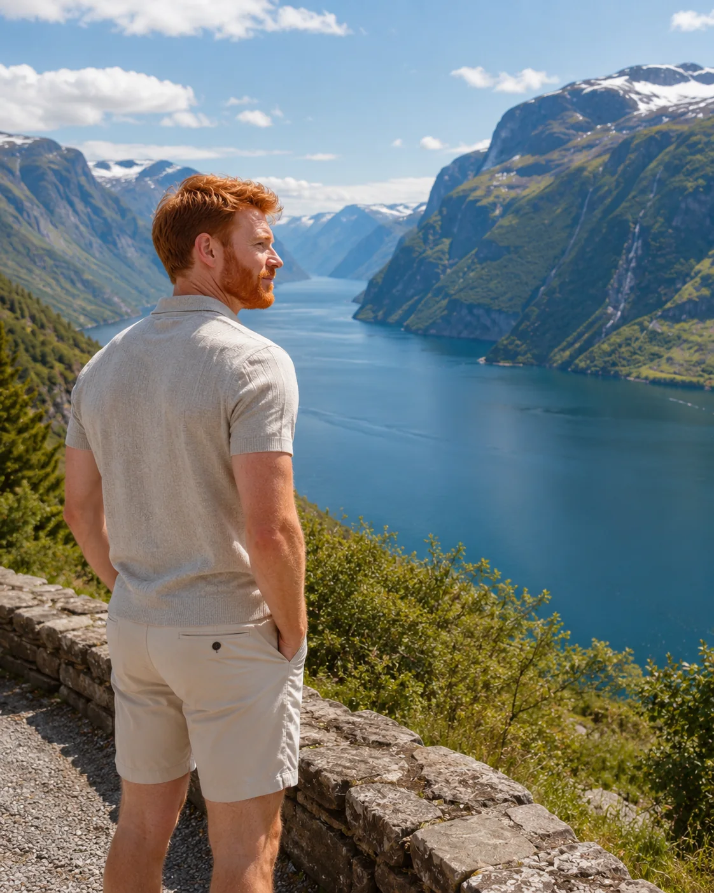

Lagos y silencio alpino
El agua amplía la escala de las montañas y crea una experiencia donde el tiempo deja de ser solo agenda.

Fiordos, montañas, lagos y paisajes que devuelven espacio al tiempo.
El paisaje deja de ser fondo y comienza a organizar el ritmo del viaje.
El agua amplía la escala de las montañas y crea una experiencia donde el tiempo deja de ser solo agenda.

Valles, túneles y pueblos convierten el desplazamiento en uno de los momentos más memorables de la ruta.

Cuando el alojamiento forma parte del entorno, el amanecer y la noche también se convierten en experiencias.

Destinos donde el paisaje define el ritmo, los desplazamientos y el recuerdo del viaje.
Fiordos monumentales, carreteras escénicas y ciudades conectadas al agua.
Lagos, pueblos alpinos y algunos de los trenes más deseados del continente.
Montañas, música y una elegancia ligada a la vida al aire libre.
Paredes dramáticas, senderos y refugios entre valles italianos.
Tierras altas, lagos oscuros y una naturaleza moldeada por el clima.
Una región para combinar paisaje, trenes y estancias más largas.
La Europa natural funciona cuando la ruta reduce el número de bases, convierte el desplazamiento en experiencia y acepta que observar la luz puede ser el gran plan del día.
El verano abre senderos y alarga los días. El invierno trae nieve, silencio y un viaje más sensorial.
Permanecer más tiempo en pocas regiones permite seguir el clima, la luz y el paisaje, elementos que no obedecen a una agenda rígida.

El paisaje no te pide que hagas nada. Solo te pide presencia.
Cuando la ruta desacelera, el viaje deja de ser una sucesión de puntos y vuelve a ser una experiencia completa.
Alianzas editoriales, destinos, turismo y proyectos de contenido.